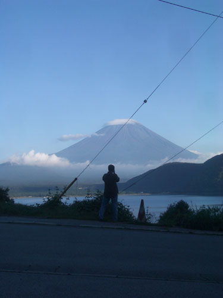

| < | > |
| greetings from an old volcano | [2006-11-26 23:48] |
|
 the first time i was in Fuji's backyard it rained without a break - it's up there they said - but i never saw it this time - after a week traveling in fine weather - as the little train climbs into Fujiyoshida - it looks like soggy times are here again to stay but no - next morning - after idling in the DIY supermarket - we walk back out to the car park and - little visual bang - of course - that's what it looks like so - we will devote our day to Fuji viewing after all - first stop the New Age cafe the young waitress pours out her restless soul - French husband of two months hovers - well tanned and yet to see the winter - talk is of nearby Aokigahara - the suicide forest if we see them walking without bags - and they seem a little strange - we try to talk to them - help them maybe to turn back in our chariot of steel - Yuichi at the wheel - we fear not circle serene uninhabited Lake Motosu - walk by the shore - run clean mudless gravel through our hands no steams flow in - the water just wells up at the only shop - with the setting sun - the photographers appear - the view is on the 1000 ¥ note |
|
|
|